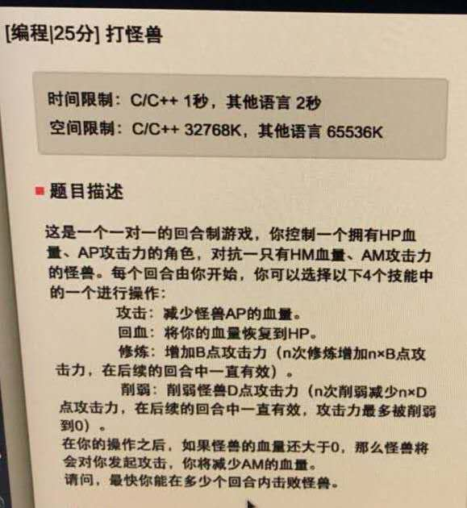
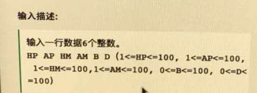
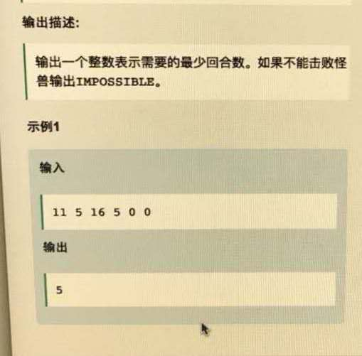

☰ 目录
[网易游戏人工智能，数值]20180328_打怪兽



这个题用的dfs做的，还算很经典的。
#include <bits/stdc++.h>
using namespace std;
int init_value;
int min_value = INT_MAX;
int impossible = 0;
int tarck( int & HP, int & AP,int & HM, int& AM ){
if( (HM - AP >0) && HP <= AM ){
return -1;
}
/// 怪兽不能承受一次攻击 或者 攻击怪兽后，怪兽存货且 当前血
// if( HM <= AP && HP >0 || )
if( HM - AP >=0 )
HM = HM - AP;
else HM = 0;
return 0;
}
int ret( int & HP, int & AP,int & HM, int& AM ){
if( HP > 0 && HM >0 && (init_value > AM ) ){
HP = init_value;
return 0;
}
return -1;
}
int struggle( int & HP, int & AP,int & HM, int& AM, int& B, int& D ){
if( HP > 0 && HM >0 && (HP > AM) ){
AP += B;
return 0;
}
return -1;
}
int decrease( int & HP, int & AP,int & HM, int& AM, int& B, int& D ){
if( HP > 0 && HM >0 && (HP > AM - D ) ){
AM -= D;
return 0;
}
return -1;
}
void dfs( int & HP, int & AP,int & HM, int& AM, int& B, int& D, int& res ){
// if( HM - AP > 0 && HP < AM ){
// if( HP < (AM - D) )
// impossible = -1 ;
// }
if( HP > 0 && HM <=0 ){ /// 这个地方刚开始写成 AM 去了，不太对
if( res < min_value)
min_value = res;
return;
}
int flag = 0;
for( int i = 0; i < 4; i ++ ) {
if (i == 0)
flag = tarck(HP, AP, HM, AM);
else if (i == 1){
if( HP < AM && HM - AP > 0 )
flag = ret(HP, AP, HM, AM);
else
flag = -1;
}
else if (i == 2)
flag = struggle(HP, AP, HM, AM, B, D);
else if (i == 3)
flag = decrease(HP, AP, HM, AM, B, D);
if (flag != -1) {
if( HM > 0 )
HP = HP - AM;
res += 1;
dfs(HP, AP, HM, AM, B, D, res);
res -= 1;
}
}
}
int main(void){
int HP,AP,HM,AM,B,D;
cin>> HP >> AP >> HM >> AM >> B >> D;
init_value = HP;
int res = 0;
if( HM - AP > 0 && HP < AM ){
if( HP < (AM - D) )
impossible = -1 ;
}
if( impossible == -1 )
cout << "IMPOSSIBLE" << endl;
else{
dfs(HP,AP,HM,AM,B,D,res);
cout << min_value << endl;
}
return 0;
}